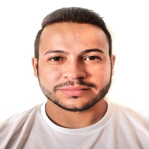

27 anos, Namorando, natural de Franca, São Paulo

da luz dos astros,
De que o sol tenha calor,
Duvida até da verdade,
Mas confia em meu amor.
(William Shakespeare)
Sou um rapaz que adora esporte, pratico musculação, jogo futebol pelo menos uma vez por semana, adoro assistir esporte, torço para o SPFC.
Adoro viajar de moto e conhecer cachoeiras novas, além de visitar as conhecidas, para meditar e relaxar
Gosto de jogar video game, atualmente trabalho por conta e sempre gostei desde a adolescência tudo que envolva internet. Não é a primeira vez que estudo algo relacionado a programação e desenvolvimento, em 2013 me formei pela SENAC-Franca no curso técnico de informática.
Atualmente cursando desenvolvimento de Software Multiplataforma pela faculdade FATEC-Franca.